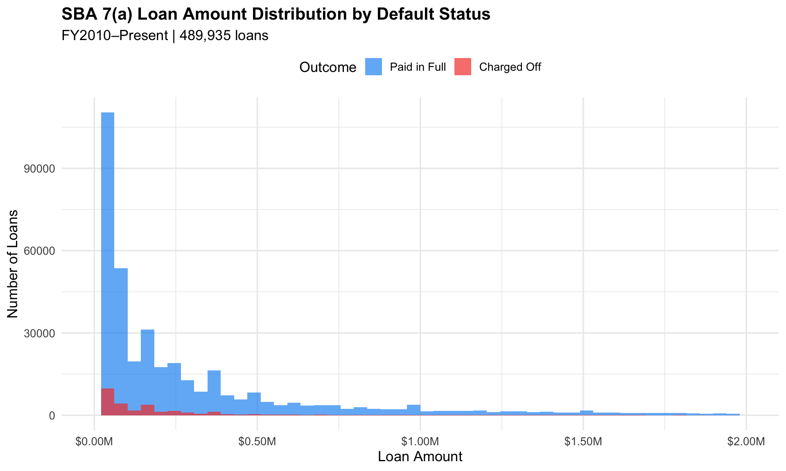
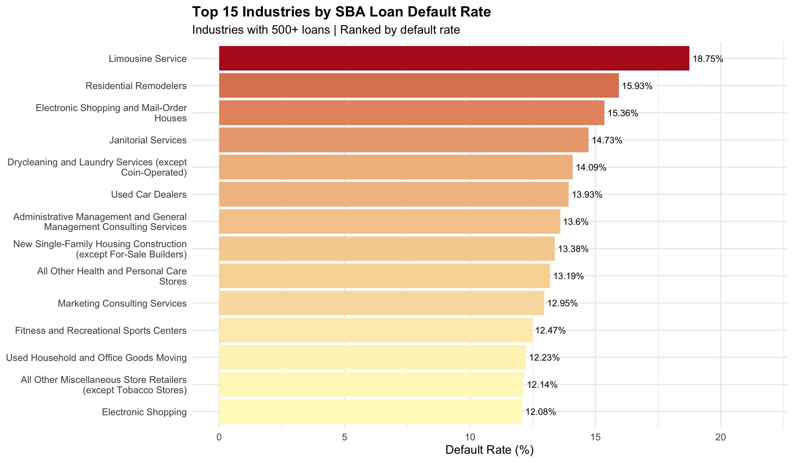
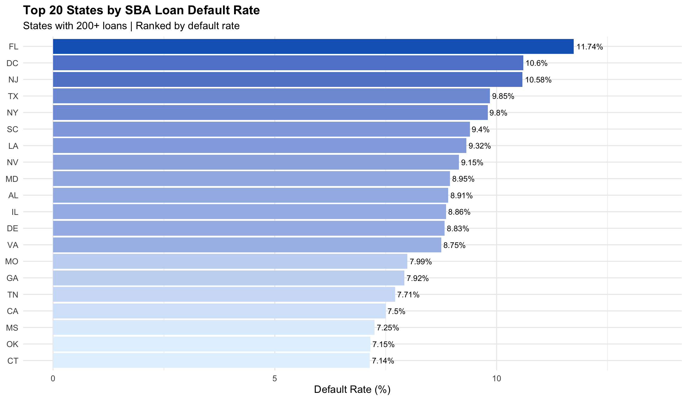
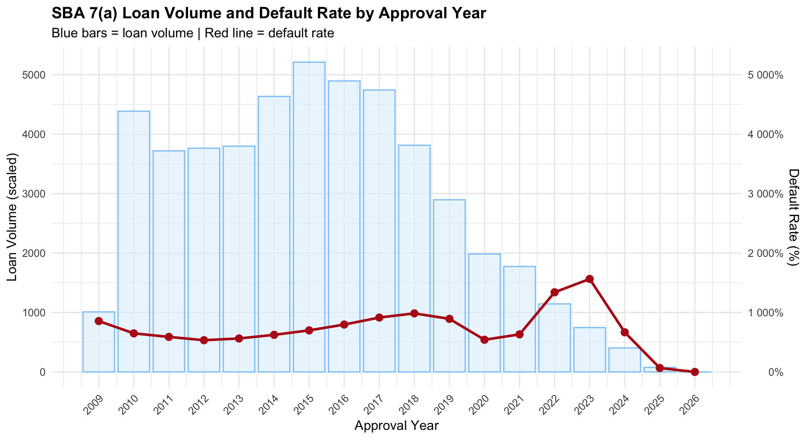
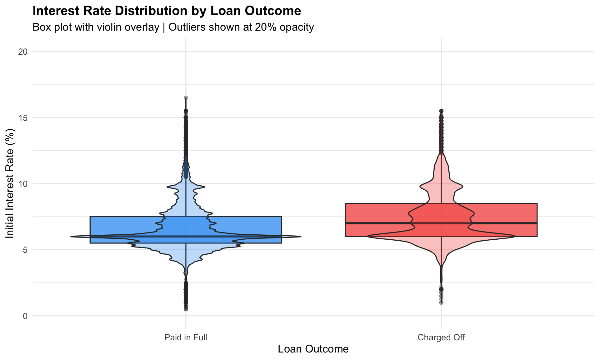
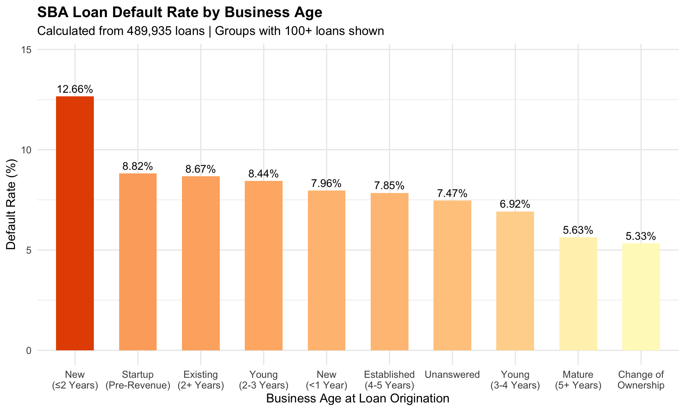
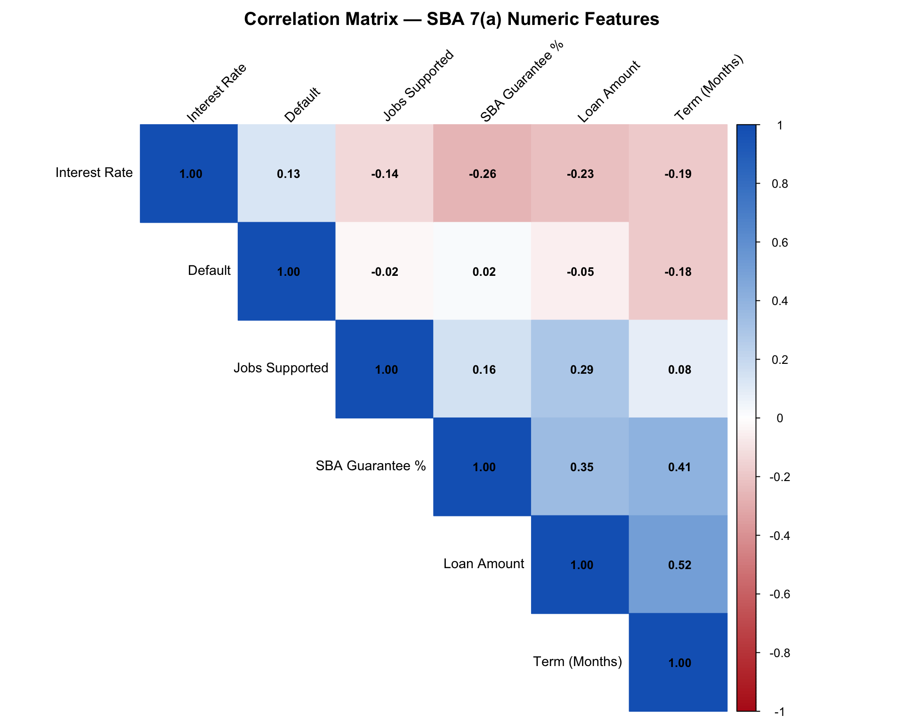

Rows loaded: 489935 Columns: 31 Default rate: 7.42 %This report analyzes raw SBA 7(a) federal loan data cleaned in Phase 1. The goal is to understand the distribution of loan characteristics, identify default patterns, and inform feature selection for Phase 4 modeling.
Rows loaded: 489935 Columns: 31 Default rate: 7.42 %
Key Finding: SBA 7(a) loans are heavily concentrated below $250,000 with a strong right skew. Charged-off loans appear proportionally more frequent in smaller loan buckets, which may suggest higher relative default risk at the lower end. However this is correlation not causation — larger loans undergo more rigorous underwriting scrutiny before approval, meaning the lower default rate on large loans likely reflects selection bias in the approval process rather than loan size itself being protective. This distinction will be important when interpreting model coefficients in Phase 4.

Key Finding: Limousine and personal transportation services show the highest default rates at nearly 19%, followed by residential remodeling and electronic retail. These industries share common risk characteristics — project-based or discretionary revenue, high sensitivity to economic cycles, and thin operating margins. This finding will inform industry-level risk features in Phase 4 modeling.

Key Finding: Florida leads all states with an 11.74% default rate, followed by DC and New Jersey at roughly 10.6% and 10.6% respectively. Florida’s elevated default rate is consistent with its exposure to natural disaster risk — hurricanes and flooding can devastate small businesses overnight, disrupting cash flow and making loan repayment impossible regardless of the borrower’s original creditworthiness. This is a systemic geographic risk that individual underwriters cannot control at the loan level.
DC, New Jersey, and New York all appear in the top five, which aligns with high cost-of-living environments where small business operating costs — rent, labor, utilities — compress margins and reduce the buffer against economic shocks. A restaurant in Manhattan faces fundamentally different fixed cost pressure than the same restaurant in rural Tennessee.
Texas and California, despite their large loan volumes, show moderate default rates around 9-10%, suggesting that economic diversification at the state level provides some natural hedge against industry-specific downturns.
This geographic signal will be incorporated as a state-level risk feature in Phase 4 modeling. It also directly connects to Phase 5 fairness analysis — states with structurally higher default rates may create disparate impact concerns if geography is used as a direct model input.

Key Finding: This chart reveals three distinct macroeconomic periods that shaped SBA 7(a) lending patterns between 2010 and 2026.
2010–2019 — Post-Crisis Recovery: Loan volume grew steadily through the decade as the economy recovered from the 2008 financial crisis. Default rates remained relatively stable in the 1,000–1,500 basis point range, reflecting a healthy but cautious lending environment.
2020–2021 — COVID Displacement: Loan volume dropped sharply in 2020 as the SBA redirected resources toward emergency programs — the Paycheck Protection Program (PPP) and Economic Injury Disaster Loans (EIDL) — which provided direct grants and forgivable loans to small businesses. These programs temporarily absorbed demand that would otherwise have flowed through the 7(a) program. Critically, default rates did not spike immediately during the pandemic because government relief programs artificially supported borrower cash flows, masking underlying credit stress.
2022–2023 — The Macroeconomic Double Whammy: Default rates peaked in this period as the Federal Reserve aggressively raised interest rates to combat post-pandemic inflation — the fastest rate hiking cycle since the 1980s. Borrowers who took on variable-rate SBA loans during the low-rate environment of 2020–2021 suddenly faced materially higher debt service costs. Simultaneously, inflation compressed operating margins as input costs rose faster than businesses could pass through price increases to customers. The combination of higher rates and margin compression created a perfect storm for small business defaults — explaining why the default spike lagged the pandemic by two years rather than occurring during it.
2024–2026 — Right Censoring: Default rates appear to fall sharply in recent years, but this is a statistical artifact rather than a genuine improvement in credit quality. Loans approved in 2023–2025 have not had sufficient time to season and default. In credit risk modeling this is called right censoring — recent observations are incomplete because the outcome has not yet been observed. Phase 4 modeling will account for this by weighting or excluding recent vintages from the training set to avoid biasing the model toward artificially low default rates in recent years.

Key Finding: Charged-off loans carry measurably higher interest rates than loans paid in full. The median interest rate for defaulted loans sits roughly 1-2 percentage points above the paid-in-full median, and the interquartile range is wider — meaning defaulted loans show more variability in their pricing, not just higher rates on average.
Two interpretations are worth noting here. First, higher interest rates directly increase monthly debt service costs, reducing the borrower’s cash flow buffer and increasing default probability — this is a direct causal mechanism. Second, lenders price risk into interest rates, meaning higher-rate loans were already flagged as riskier at origination. The interest rate therefore captures both the lender’s ex-ante risk assessment and the borrower’s ex-post repayment pressure simultaneously.
The violin shape for charged-off loans shows a second concentration of loans around 10-12%, likely corresponding to variable-rate loans that reset higher during the 2022-2023 rate hiking cycle identified in the previous chart. This connects the time series finding to the individual loan level — rising rates did not just affect aggregate default rates, they show up in the interest rate distribution of individual defaulted loans.
Interest rate will be included as a primary feature in Phase 4 modeling given this clear distributional separation between outcomes.

Key Finding: Business age shows a clear monotonic relationship with default risk — newer businesses default at significantly higher rates than established ones. New businesses under two years old default at 12.66%, more than double the 5.63% rate for mature businesses with five or more years of operating history. This nearly 2.4x multiplier makes business age one of the strongest categorical predictors in the dataset and confirms its inclusion as a primary feature in Phase 4 modeling.
Startups seeking pre-revenue financing show an 8.82% default rate — lower than businesses under one year old but higher than established firms. This is intuitive: startups that receive SBA financing have passed an initial underwriting screen, while businesses that have been operating for under a year have a demonstrated but short track record that provides limited predictive signal.
One data quality concern worth noting is the overlap between category definitions. The SBA data contains multiple labels that describe similar business ages — “New Business or 2 Years or Less”, “New Less Than 1 Year Old”, and “Existing or More Than 2 Years Old” create ambiguous boundaries in the 1-2 year range. This inconsistency reflects real-world data collection issues in federal reporting systems where category definitions changed across fiscal years. In Phase 3 feature engineering these overlapping categories will be consolidated into a single ordinal business age variable to prevent the model from treating semantically similar categories as independent signals.

Key Finding: Interest rate shows the strongest linear correlation with default at 0.13 — modest but meaningful given the binary nature of the target variable. Term months shows a negative correlation of -0.18 with default, suggesting longer term loans default less frequently — likely because longer terms reduce monthly payment pressure.
The most critical finding is the perfect 1.00 correlation between loan_amount and sba_guaranteed_amount. These two variables are mathematically redundant — the guaranteed amount is calculated directly from the loan amount using a fixed guarantee percentage. Keeping both in a model would cause severe multicollinearity, inflating standard errors in logistic regression and creating unstable coefficient estimates. sba_guaranteed_amount will be dropped entirely before Phase 4 modeling. sba_guarantee_pct is retained as it captures the guarantee structure independently of loan size.
Interest rate has a negative correlation of -0.26 with sba_guarantee_pct — loans with higher SBA guarantee percentages tend to have lower interest rates, which makes sense since the guarantee reduces lender risk and allows more favorable pricing. This interaction will be explored further in Phase 3 feature engineering.
All remaining numeric features show low enough inter-correlation to be retained as independent predictors in Phase 4.
| Feature | EDA Finding | Phase 4 Action |
|---|---|---|
| Business Age | New businesses default at 12.66% vs 5.33% for mature — strongest categorical predictor | Consolidate overlapping categories into ordinal feature |
| Interest Rate | Defaulted loans carry 1-2% higher rates — direct causal mechanism via debt service pressure | Include as primary numeric feature |
| Industry | Limousine services (18.75%) and residential remodeling (15.93%) lead default rates | Use 2-digit NAICS sector as categorical feature |
| Geography | Florida leads at 11.74% — driven by hurricane exposure and high operating costs | Include state as categorical — flag for fairness analysis in Phase 5 |
| Loan Amount | Smaller loans show higher relative default rates — but reflects underwriting selection bias | Use loan_size_bucket categorical — avoid raw amount due to skew |
| Term Length | Negative correlation with default (-0.18) — longer terms reduce monthly payment pressure | Include as numeric feature |
| Loan Volume Trend | 2022-2023 default spike reflects Fed rate hikes — recent loans right-censored | Exclude 2023-2025 loans from training set or apply vintage weights |